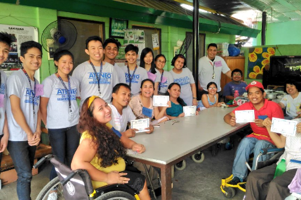
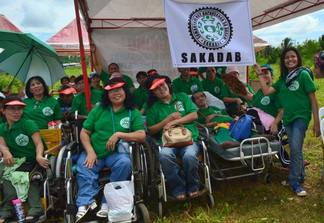

Homepage
SIP
Background
Gallery
Institution Home page

ㅤㅤSAKADAB (Samahan ng may iba't ibang Kakayahan sa Dabaw). We are a group of 27 physically challenged individuals living in Davao City with different
ㅤㅤacquired skills who came together from Our Lady of Victory - Training Center to work towards a common goal of increasing the quality of living and
ㅤㅤbecoming self-reliant. Our skills include but not limited to baking,handicraft, woodcraft, and welding.In July 15, 2010, we, SAKADAB, envisioned to
ㅤㅤhave our own homes and our own way of living. Backed up with this vision, determination, and skills, we sought help from a number of generous hearts.
ㅤㅤIn November 14, 2011, Mayor Sarah Duterte with the City Government, Mr. Oscar Hidalgo, Gawad Kalinga, and the Lions Club International came together
ㅤㅤto put our dreams to reality. A land located in Los Amigos, Tugbok, Davao was awarded by the City Government to us. The groundbreaking took place on
ㅤㅤNovember 24,2012. Our community was completed after 7 days of construction by about 1,500 volunteers. The place is now called SAKADAB-GK Village.
ㅤㅤ On August 1, 2013, the first batch of members were transferred and every was relocated by the end of August. Davao Light Aboitiz turned over pur
ㅤㅤLivelihood Training Center on November 23, 2013. Our SAKADAB GK Consumers Cooperative to the Cooperative Development Authority (CDA).

ㅤㅤSAKADAB is a community of differently-abled individuals. As a community, there are no specific programs nor services which they offer.
ㅤㅤInstead, they provide each other spiritual, moral, and financial support to live a more meaningful life. Some of the activities of the
ㅤㅤcommunity are farming, baking, handicraft, woodcraft, and welding.The community produces consumer products such as handicrafts.The community
ㅤㅤlives in different houses. There are dormitory-type houses where several residents of the community share the house and the bills
ㅤㅤ(such as electricity and water). There are also family-type houses where a family solely lives in the house. SAKADAB has a
ㅤㅤtotal of 35 individuals living in the community. 19 of them (20-50 year-olds) are differently-abled and another 5 are differently-abled seniors.
ㅤㅤThe rest of the residents of SAKADAB are dependents (children) and accompanying adults (usually a relative who assist in their needs).
ㅤㅤThe residents of SAKADAB are also supported by their relatives who send them financial support. Some of their relatives are from Davao City
ㅤㅤand others are located outside Davao Region.
ㅤㅤLocation: SAKADAB GK Village, Purok 6-b7, Los Amigos, Tugbok Davao City
ㅤㅤCommunity Contact Person: Mr. Ludivico Gicain Mascarinas Jr. (aka Kuya Junix)
ㅤㅤContact Details: 0936 569 5586; 0948 540 9815
ㅤㅤSocial Media Page: https://www.facebook.com/juniks.mascarinas